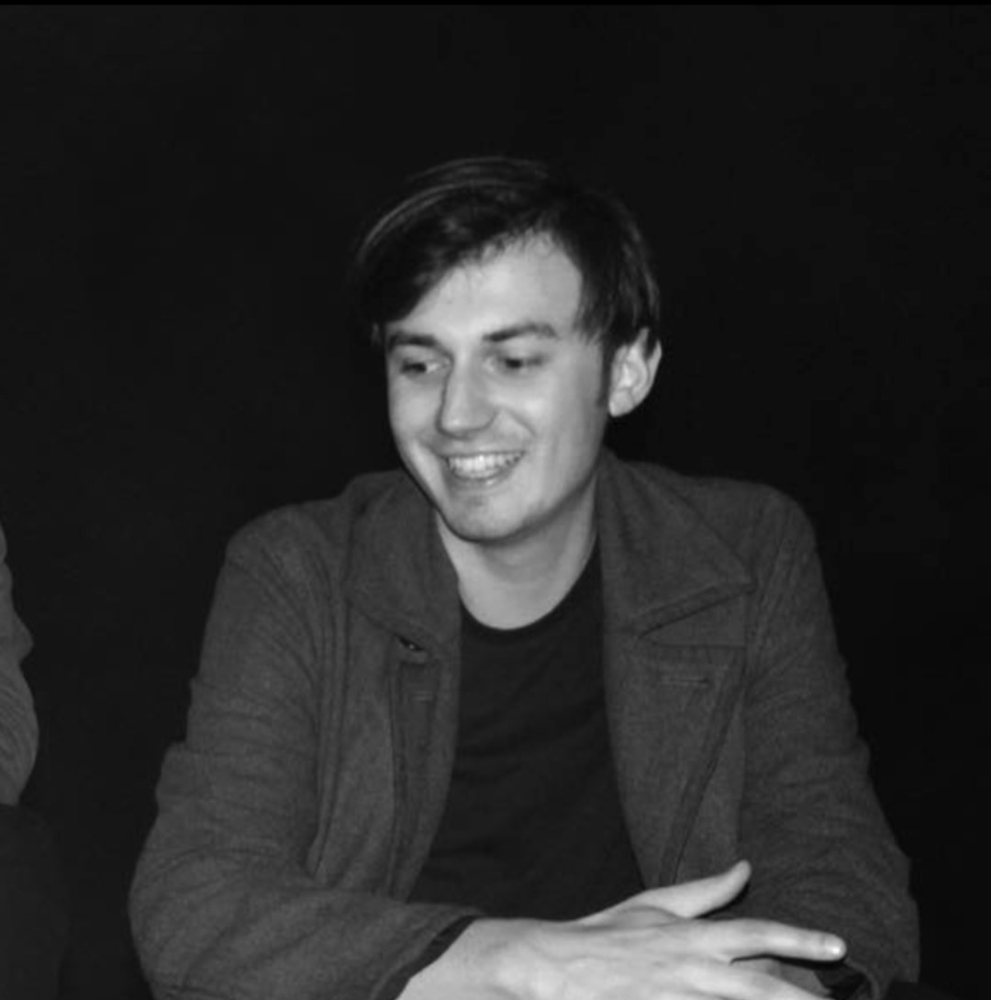
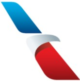
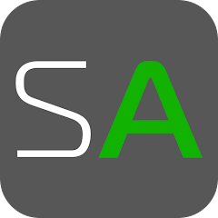

About me

I’m currently a Senior Product Designer based in Dallas, TX, focused on creating intuitive, accessible, and delightful experiences at scale.
I thrive at the intersection of business goals and user needs. My work spans UX strategy, wireframes, user flows, journey mapping, interactive prototypes, discovery research, and usability testing.
I’ve redesigned major airline experiences and contributed to over $100M in incremental revenue. I started my career at a startup and still love the collaboration of working with small tightknit teams. I value clarity, curiosity, and inclusive design and I love working with large teams but move like startups.
Outside of work, you’ll probably find me playing volleyball or pickleball with friends, traveling to a new destination, or finding a mountain to backpack to the top of. Wanna collaborate or just say hi?
Work Experience

American Airlines
Sr. Product Designer
October 2023 -
Present
American Airlines
Product Designer
August 2021 -
October 2023

Service Autopilot
UX/UI Designer
Mar 2019 -
Aug 2021